FIRST, THE ANSWER
The shift cables
could stay in place.
On this ST-6600, the hoods were replaced without removing the shift cables. The only items removed or replaced in connection with the hood replacement were the bar tape and the front and rear brake inner cables. After both hoods were replaced, the brakes were adjusted and the bike passed a test ride.
With the method used here, the old bar tape was unwrapped and both brake inner cables were pulled out before the hoods were swapped; both brake inner cables were then replaced with new ones. Two new shift inner cables were also fitted, but that was extra maintenance added during trial and error — it was not needed to replace the hoods. That record is kept separately under “Additional work”.
This guide covers the correct part, fitting the stiff new hoods and what to check when reconnecting the brakes. Information based on Shimano documentation is kept separate from what the mechanic actually experienced on this bike.
SECTION 01
01 Part number
First, match the lever model against the replacement part number.
Genuine SHIMANO bracket covers (STI lever hoods), left/right pair
In Shimano’s official exploded view for the ST-6600 / ST-6603, item 14 is the bracket cover — Shimano’s name for what most riders call the STI lever hood or brake lever hood. The document lists it as “Y-6K2 98100”, written without spaces as Y6K298100. The ST-6600-G / ST-6603-G are covered by the same exploded view. [1]
- Before buying, check the lever model number, the listed part number, and whether the item is a left/right pair.
- Different Ultegra generations use different hood shapes. Don’t choose by appearance or series name alone.
- Even new hoods can deteriorate in storage. If a hood is cracked or hardened, don’t fit it.
This guide has not tested hoods for other generations or aftermarket alternatives. Stock, price and continued availability are not guaranteed.

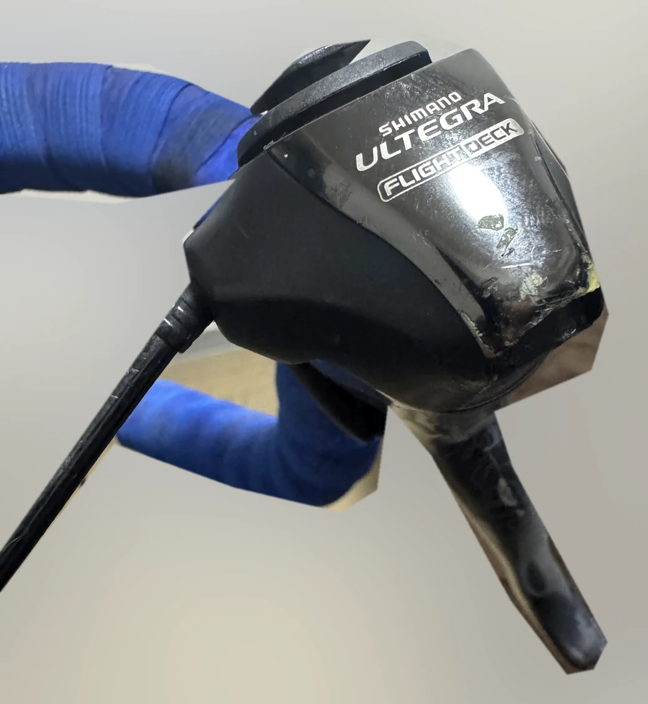
SECTION 02
02 Parts and tools
Sorted into “needed for the hoods”, “used with this method” and “additional work”.
| Part / tool | Category | Spec / what was used |
|---|---|---|
| Lever hoods (bracket covers) | Needed for the hoods | For ST-6600: Y6K298100, left/right pair |
| Brake inner cables | Replaced with this method | SHIMANO road stainless, 1.6 mm × 2050 mm, ×2 (front and rear). Both were pulled out for the job and replaced with new ones |
| Bar tape | Replaced with this method | Old tape unwrapped, new tape fitted: fi'zi:k TEMPO MICROTEX CLASSIC 2.0 mm, yellow |
| Finishing tape and bar end plugs | Used with this method | For finishing the tape ends when rewrapping. Check what comes in the box |
| Cable end caps (crimp caps) | Used with this method | Sized for the cable diameter you use |
| Cable cutter | Used with this method | GodHand GH-BWC-150-CN |
| Shift inner cables | Additional work | 1.2 mm × 2100 mm, ×2, bought as SHIMANO DURA-ACE. Not needed for the hood replacement |
| Hex keys | For clamp work | 5 mm for the STI handlebar clamp (per the official manual). Check other sizes on the parts and their manuals |
| Torque wrench | Have one ready when retightening | Covering the specified torque of each part. Whether one was used on this job was not recorded |
Two new brake inner cables were fitted on this job, but that reflects the method used here. It has not been established that pulling the brake cables, or buying new ones, is required for every way of replacing the hoods. Whether the old brake inner cables could have been reused was also not tested. At a minimum, don’t reuse an inner cable that is frayed, rusty, kinked or damaged. If the housing is damaged or the cable drags badly, a new inner cable alone may not fix it.
Spec sources: Shimano’s official product pages list 1.2 mm × 2100 mm and 1.6 mm × 2050 mm. However, the exact product code and coating of the shift cables bought for this job could not be identified, so they are not claimed to be identical to current products. Tool part numbers and names were confirmed against the maker’s listing. [6] [7] [8]
SECTION 03
03 Removing bar tape, brake cables and old hoods
The bar tape and both brake inner cables came off. The shift cables stayed put.
With the method used here, the old bar tape was unwrapped and the front and rear brake inner cables were pulled out before the hoods were replaced. The shift cables did not need to be removed. Whether removing the brake inner cables is itself essential to a hood replacement was not tested on this job. Start by confirming which cable goes where.
| Type | Runs to | On this job |
|---|---|---|
| Brake | Front and rear brake calipers | Both pulled out and replaced with new ones. 1.6 mm diameter. Check for the road-type cable head. Trace which lever runs to which brake on the bike itself. |
| Shift | Right STI → rear derailleur Left STI → front derailleur | Did not need to be removed for the hood replacement. Replaced separately on this job as additional work. |
Record the setup before you take anything apart
Photograph the lever position, the housing routing, the area around the anchor bolts and the grooves the cables run in. Keep the bike stable and keep cut cable ends pointed away from your hands and eyes. Once the bar tape is off, record how the housing is laid out underneath as well.
Unwrap the bar tape
Unwrap the old bar tape and check where the housing sits under it. The old tape was not reused; new tape went on at the very end of the job (06).
Release the brake cable from the caliper end
After releasing the cable anchor bolt at the brake, deal with the cut end and feed the inner cable toward the STI lever. The official manual shows the cable being installed by tilting the lever inward and passing the inner cable through the cable hook. Line the cable head up with a position where it can come off the hook, then take it out — don’t force the cable nipple back through the housing. [2]
Leave the shift cables anchored. On this job, the shift cables did not need to be removed to replace the hoods.

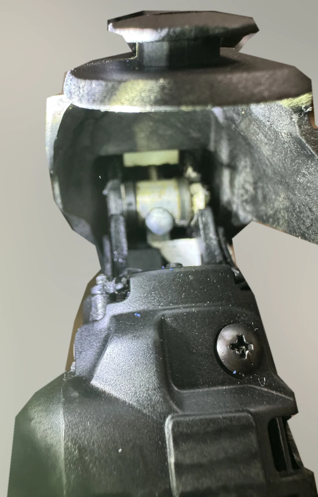

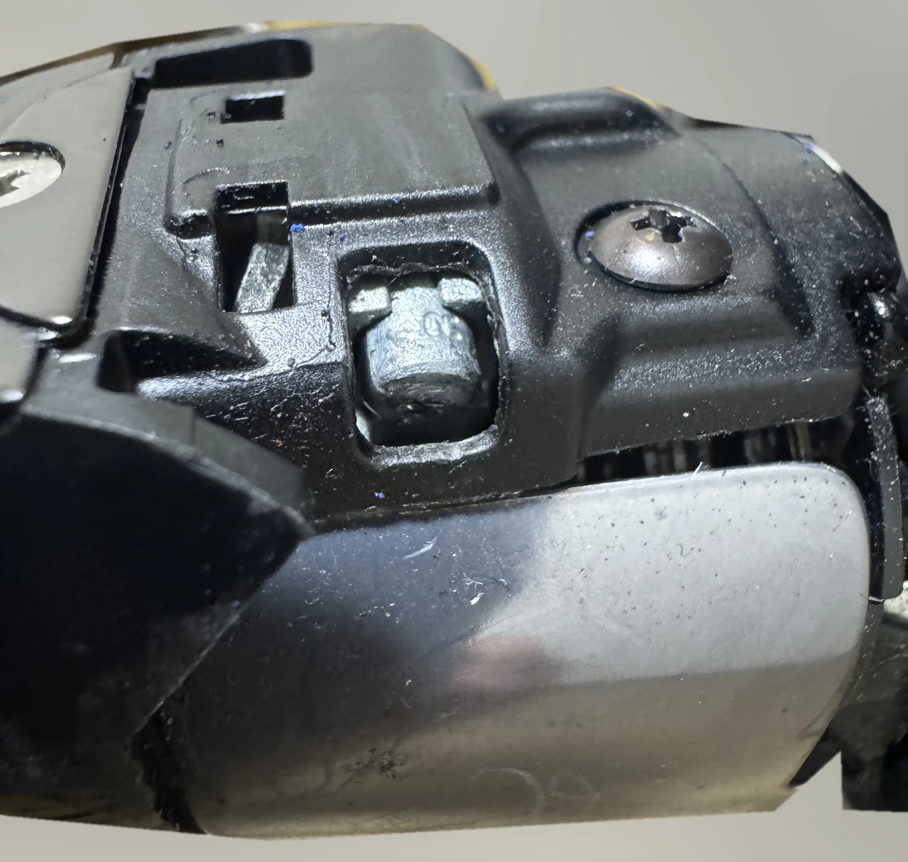

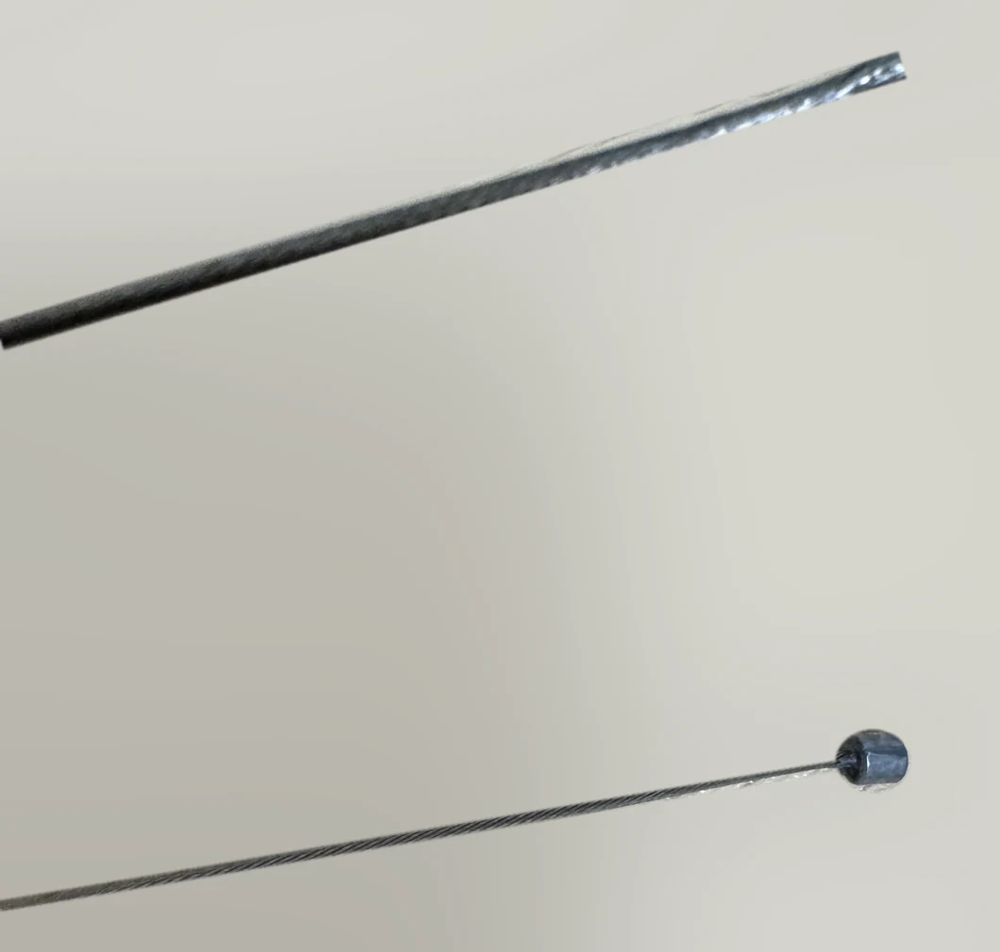
Remove the old hoods
Take the worn hoods off the lever bodies. How the old hoods were removed — for example, which end was peeled first — was not recorded on this job, so no step-by-step method is given here. Even when the old hood is going in the bin, don’t pry with tools that could damage the lever body or the clamp.
SECTION 04
04 Fitting the new hoods
The hardest part: getting a stiff new hood over the lever body without catching it.
Even with the brake inner cables out, the new rubber hoods were very stiff, and working them over the protruding parts of the STI lever was a struggle. Warm water and alcohol were both tried without an easy result; in the end the hoods did go on. These were trial-and-error attempts and are not presented as Shimano’s recommended procedure.

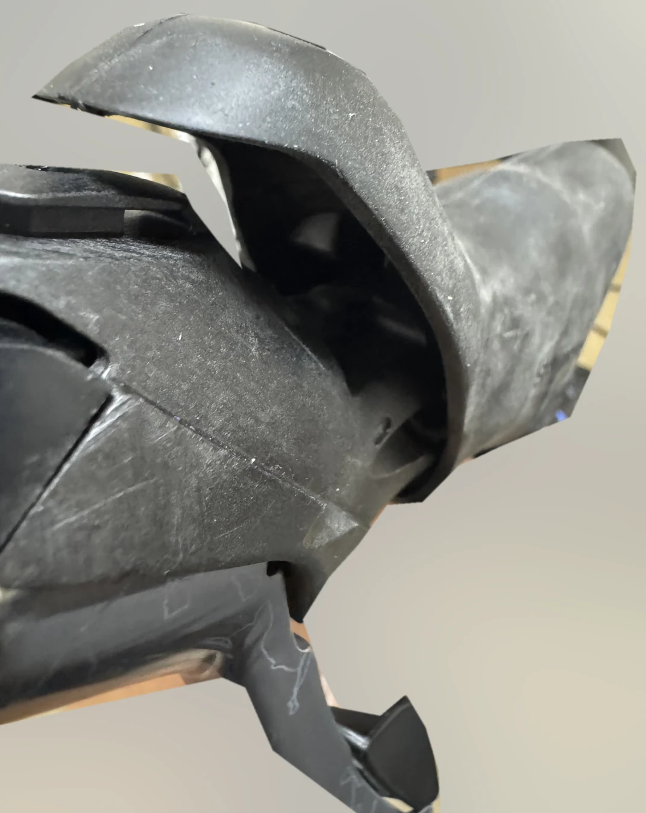
Check left/right, orientation and seating
Use the R / L marking inside each hood to tell left from right, and line up the grip surface and the lever-side opening. The official manual says the tabs on the hood fit into matching slots on the bracket. Check all the way around for twists or lifted edges. [2]
The photo shows the hood mid-installation, but which end went on first and how it was finally held to get it on were not recorded. Steps such as “pull hard in this direction and it will always go on” have not been added.
Tightening the clamp with the hood folded back: about an hour here
After the hoods were on, tightening the STI clamp bolt while holding the hood folded back took about an hour. That is this mechanic’s own working time, not a standard time for the job. In the official diagram, the hood is folded back and a 5 mm hex key goes into the installation nut on the outside of the bracket. Don’t confuse it with the small Phillips screw on top. Make sure the key goes fully into the hex socket rather than engaging at an angle. [2]
There is no photo of the key in place, so the access angle can’t be shown from real photos. Check the mounting direction in the “Installation to the handlebar” diagram of the official manual. Because the handlebar material and its limits could not be confirmed, no tightening torque is given for this bike.

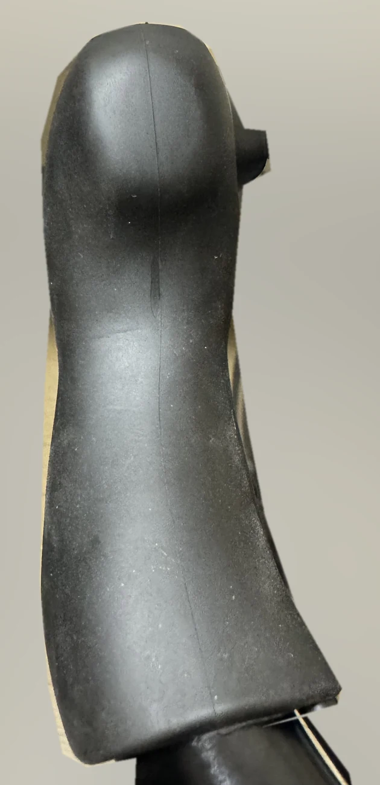
SECTION 05
05 Reinstalling and adjusting the brake cables
Don’t chase tension alone — check routing, anchoring and return in order.
New brake inner cables were fitted front and rear. On the rear brake, the cable went back and forth between too slack and too tight, and the tension adjustment took about two hours (this mechanic’s own working time). In the end the brake worked properly and the bike passed a test ride.
From the lever to the caliper
Seat the correct road-type cable head in the cable hook, and push the housing and outer guide fully into their seats. Make sure the routing and length allow the bars to turn fully left and right without pulling on the cable. Check the lever-side layout against the ST-6600 manual. [2]

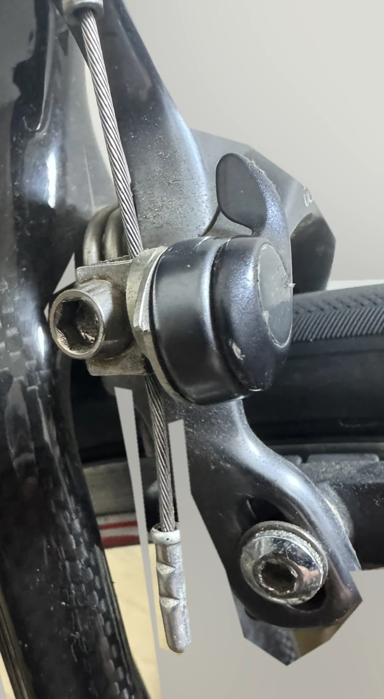

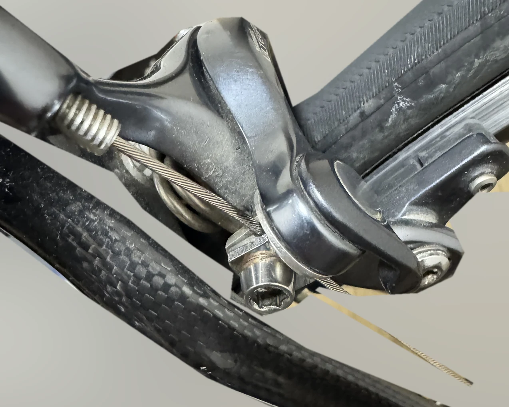
Set it roughly at the anchor, fine-tune with the barrel adjuster
Shimano’s official BR-6600 procedure is to close the quick-release, anchor the cable, then adjust centering and shoe clearance. The barrel adjuster is for fine-tuning clearance — it isn’t meant to take up a large amount of slack by being wound out almost to the end of its thread. [3]
- Is the housing fully seated in its stops, without kinks or snags along the way?
- Do the shoes contact the rim braking surface without touching the tyre?
- When the lever is released, do both shoes spring back and the wheel spin freely?
- After repeated hard squeezes, does the inner cable hold at the anchor without slipping, and does the lever travel stay the same?
The BR-6600 manual asks you to operate the lever about 10 times after adjusting and recheck operation and shoe clearance. Confirm the anchor bolt torque and shoe position dimensions in the documentation for the caliper model actually fitted to your bike. [3]
SECTION 06
06 Cable ends and bar tape
Finish the cables and the bars once the adjustments are done.
Tidy the inner cable ends
On this job, the cable end caps were crimped on after all adjustments were finished. That is simply the order things were done that day. If you follow it, make sure before riding that no spare cable can catch in the wheels or drivetrain and that the ends are safely protected.
Confirm you have enough spare length for adjustment and re-anchoring, cut with a proper cable cutter, and crimp on end caps that fit. The cap only stops fraying; it does not hold the brake or shift cable in place.
Yellow TEMPO MICROTEX CLASSIC 2.0 mm
Finally, yellow fi'zi:k bar tape went on. The box is marked TEMPO, MICROTEX CLASSIC and 2.0 mm. The Japanese importer for fi'zi:k states that the former TEMPO Microtex 2mm Classic has been renamed RACE FEEL 2mm CLASSIC. [9]

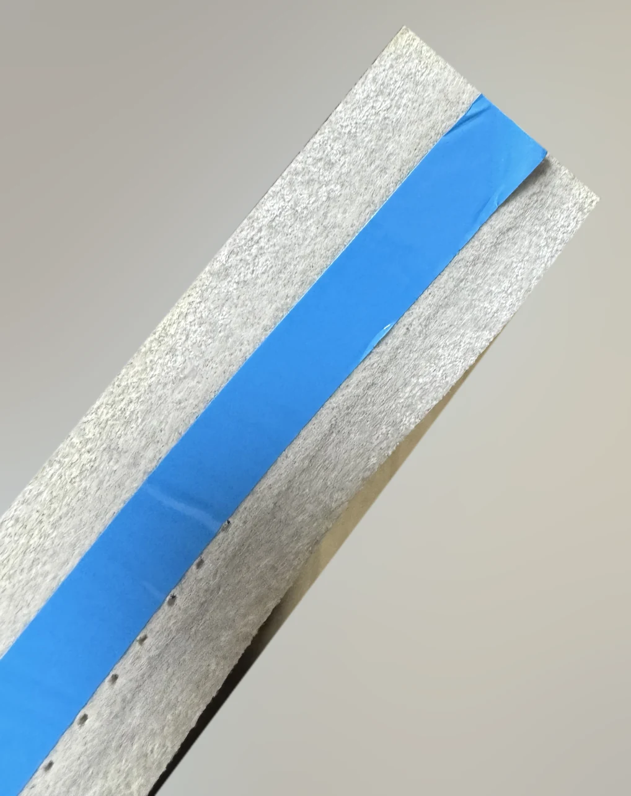

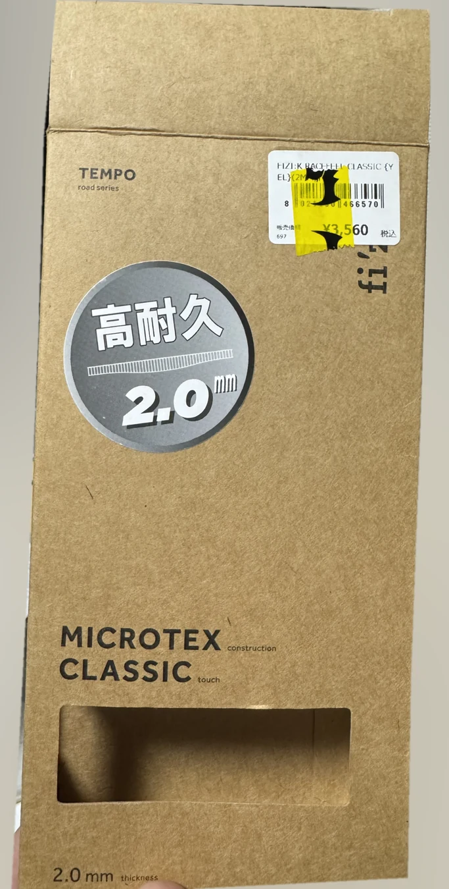
The blue strip alone doesn’t prove the tape has an adhesive backing. The official and importer specifications checked for this guide did not identify the strip’s purpose on this particular roll either. Don’t assume it is a release liner and keep forcing it off.
Key points for rewrapping
Hold the housing in its intended route, then wrap from the bottom end of the bar, keeping the overlap and tension consistent. Leave no gaps around the lever bracket, and if the tape comes with short extra pieces, follow its instructions. Secure the top end with finishing tape, fold the hood back into place and check for interference. Follow the tape’s own instructions for how much to stretch it and which direction to wrap.
Always check both bar end plugs. The finished-bike photo can’t show whether the plugs are secure or fully installed. Check on the bike itself that the ends are protected and the plugs won’t pull out — not just that the wrap is finished.
SECTION 07
07 Test ride and finished bike
“The job is done” and “the bike is safe to ride” are two separate checks.
On this job, the owner adjusted the brakes for proper braking and release, and the bike passed a test ride. That said, there is no record of every inspection item being carried out, or of measured tightening torques. The list below is for readers to work through after reassembly.
Pre-ride checks
After the static checks, ride slowly on a safe, flat area and recheck front and rear braking and shifting. Check the anchors and cables again for loosening after the test ride. The checkboxes are only for use on this screen; nothing is saved.
SECTION 08 / ADDITIONAL WORK
08 Additional work: shift cable replacement
Not needed for the hoods. A record of extra maintenance done during trial and error.
Releasing the shift cables (if you are replacing them)
- With the bike set up so the pedals can turn safely, shift to the smallest rear sprocket and the small front chainring to take tension off the cables.
- Release the cable anchor at the derailleur and remove the end cap. Don’t drag frayed cable back into the housing.
- For cable installation, the ST-6600 manual specifies operating the right lever’s release side at least 9 times and the left lever at least 2 times. Pull the brake lever to check the position of the cable hole and the cable head. [2]
- With the tension released, feed the inner cable a little toward the STI lever so the head can be taken out. If it doesn’t line up or catches, stop. Don’t start removing internal screws at random to solve it.

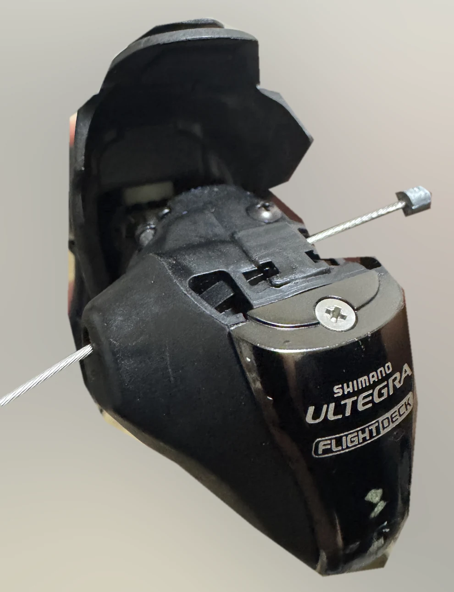
Routing: from the left STI under the bottom bracket to the front derailleur
On this bike, the front shift cable from the left STI lever runs along the frame, through the cable guide under the bottom bracket (BB) and up to the front derailleur. Check the routing before removal and make sure the cable stays in the guide’s groove when you reinstall it.

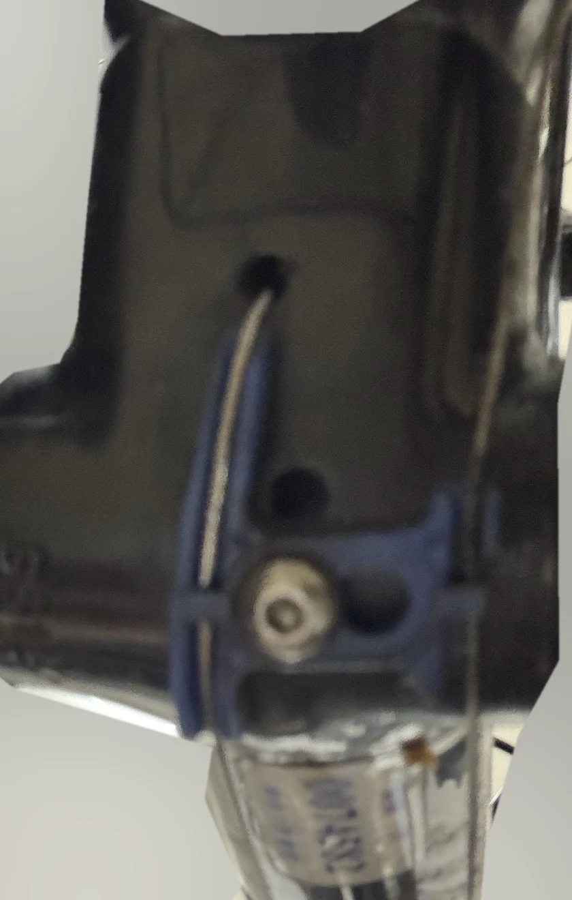

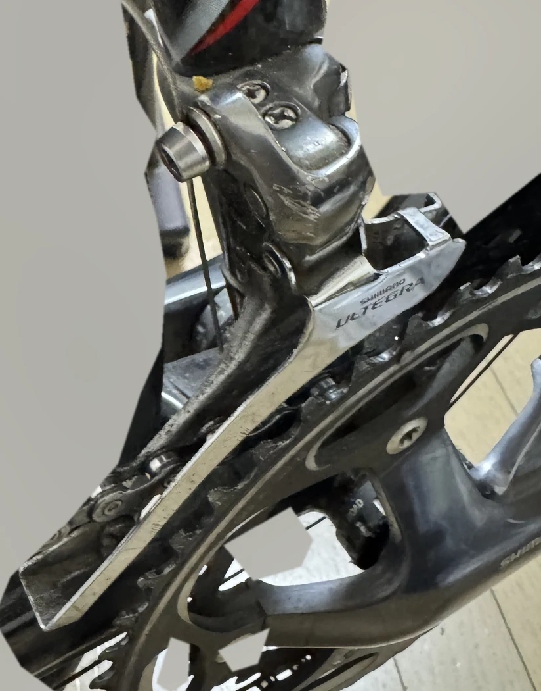
Front derailleur checks
Run the inner cable from the guide to the anchor and clamp it in the position specified for your derailleur. The FD-6600 manual has you take up the initial stretch and re-anchor the cable, then check low/top, cable tension and trim operation. For how the cable is clamped where the photo can’t show it, compare the actual anchor with the official diagram. [4]
Rear derailleur checks
Also check the routing from the right STI lever to the rear derailleur. The RD-6600 manual specifies seating the cable in the groove at the anchor. After anchoring, take up the initial stretch, perform SIS adjustment and check every gear for clean shifts and noise. [5]
The exact derailleur models can’t be confirmed from the photos. If yours are not FD-6600 / RD-6600, use the matching manuals. Don’t move the limit screws just because a cable was replaced; separate tension problems from range-of-travel problems.
SECTION 09
09 FAQ
Common questions before buying parts and during the job.
Do I need to remove the shift cables?
On this ST-6600, the hoods were replaced without removing the shift cables. Two new shift inner cables were also fitted, but that was extra maintenance added during trial and error, not something the hood replacement required.
Can ST-6600 hoods still be replaced?
On this bike, yes. That assumes you have the correct hoods and the lever body has no damage that prevents replacement. Current stock and continued supply can’t be guaranteed, so check with your retailer.
What is the genuine part number?
For the ST-6600 covered here, Y6K298100 (left/right pair). It is listed as item 14 in Shimano’s official exploded view. Compare the listed part number against your lever model.
Do the brake cables have to come out? Do I need new ones?
With the method used here, the bar tape was unwrapped and both brake inner cables were pulled out before the hoods were swapped, and both brake inner cables were replaced with new ones. Whether removing the brake cables, or buying two new ones, is necessary for every way of doing the job has not been tested. Whether the old inner cables could be reused was not checked either, so this guide doesn’t make that call. Don’t use an inner cable that is frayed, rusty or kinked, or one that is too short.
The new hood is too stiff to go on. What can I do?
Check left/right, orientation and anything it is catching on. The original official manual mentions wiping a little rubbing alcohol inside the hood, but that doesn’t guarantee it will go on. On this job, warm water and alcohol didn’t make it easy; the hoods went on after a lot of trial and error. Don’t force a hood that looks close to tearing — ask a bike shop if you’re struggling.
I can’t get the brakes adjusted properly. What should I check?
Work through housing seating, cable head seating, routing, cable slip at the anchor and shoe return, in that order. Don’t try to remove a lot of slack with the barrel adjuster alone; follow the manual for your caliper. Don’t ride until braking is confirmed, and if you can’t adjust the brakes safely, have a bike shop check them.
How long does it take?
For this mechanic, tightening the STI clamp bolt with the hood folded back took about an hour, and the rear brake tension adjustment took about two hours. Both are personal working times, not standard times for the job. The total time for the whole job was not recorded. If you haven’t done this before, leave yourself plenty of time.
Can I use aftermarket hoods or hoods from another generation?
Not tested for this guide. Don’t go by “for Ultegra” alone — check the exact model number and the maker’s compatibility information.
SECTION 10
10 References
The photos and work record are supported by the following sources.
- SHIMANO | ST-6600 / ST-6603 exploded view ↗
EV-ST-6600-2369A. Lists the bracket cover part number as a left/right pair.
- SHIMANO | ST-6600 / ST-6603 service instructions ↗
SI-6K20A-001. Handlebar installation, brake and shift cable installation, bracket cover replacement.
- SHIMANO | BR-6600 service instructions ↗
SI-8DD0A-001. Caliper mounting, adjustment and operation checks. Assumes your caliper model matches.
- SHIMANO | FD-6600 service instructions ↗
SI-5JD0A-001. Front derailleur cable anchoring and SIS adjustment. Reference for the additional work.
- SHIMANO | RD-6600 service instructions ↗
SI-5VG0C-001. Rear derailleur anchor groove, cable tension and SIS adjustment. Reference for the additional work.
- SHIMANO | Stainless shift inner cable, 2100 mm ↗
Used to confirm the 1.2 mm × 2100 mm spec. Does not identify the exact product bought for this job.
- SHIMANO | Stainless brake inner cable, 2050 mm ↗
Confirms the 1.6 mm × 2050 mm spec.
- GodHand | Price revision notice (Japanese) ↗
Used to confirm the part number and name of the GH-BWC-150-CN cable cutter (“Wire Cutter Cycling, Nipako version”). Not cited for pricing.
- Kawashima Cycle Supply | RACE FEEL 2mm CLASSIC (Japanese) ↗
Japanese importer for fi'zi:k. Confirms the 2 mm thickness, Microtex construction and the renaming from TEMPO.
Sources checked: 22 October 2026. V2 update: 22 October 2026 (corrected the description of shift cable removal; added this English version). The date of the work and the first publication date are not confirmed, so they are not shown. This is not an official SHIMANO site; it is a personal maintenance record by chunsama. 日本語版